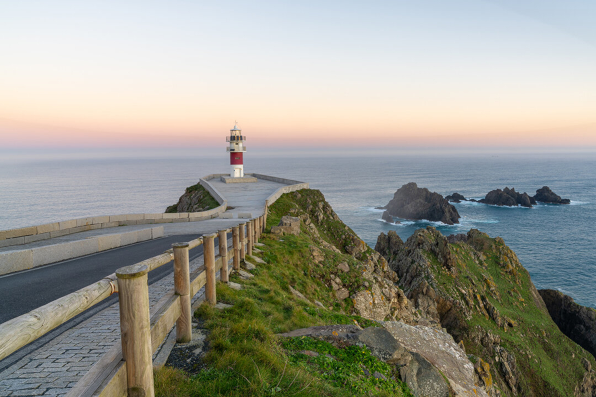
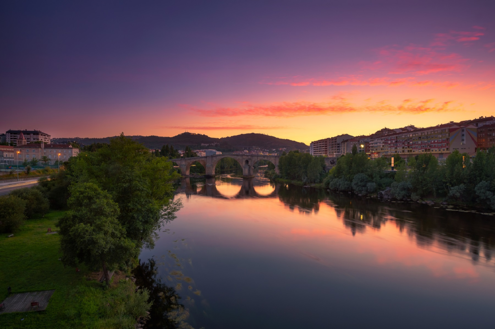
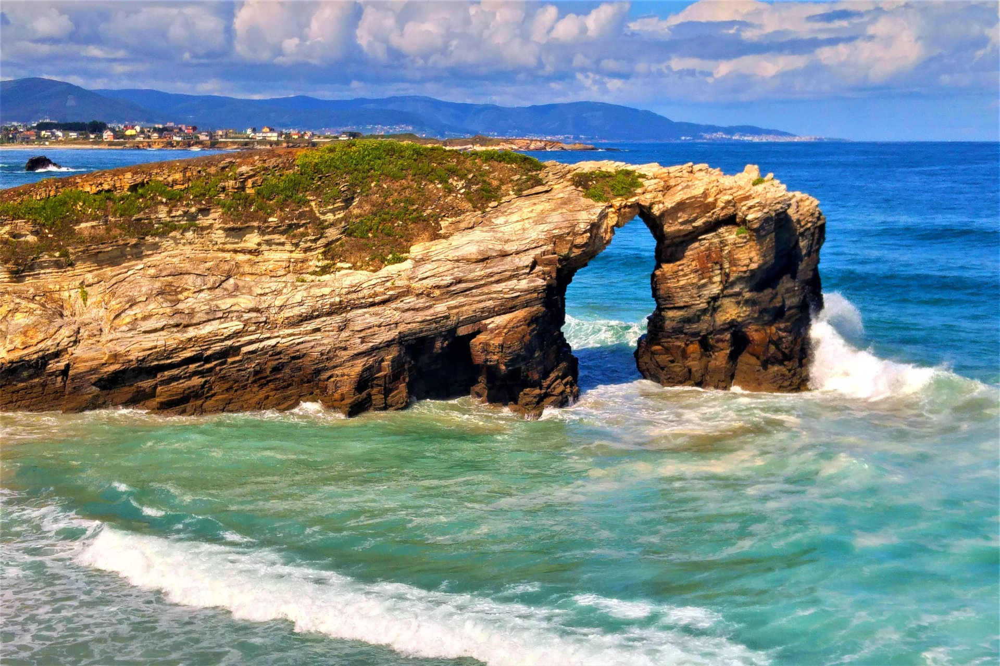
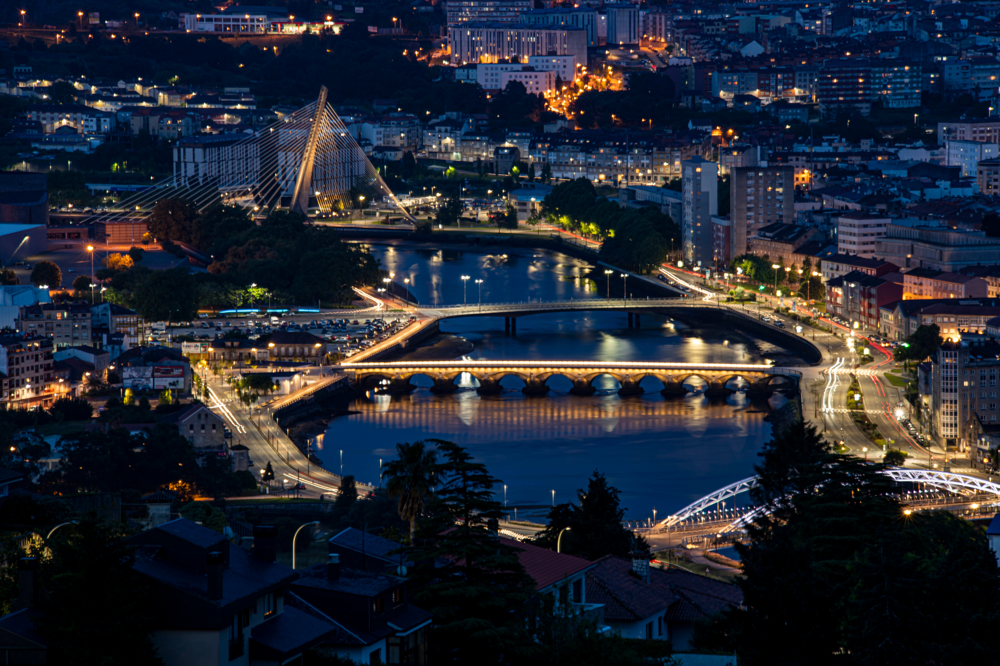

|

La Coruña
|

Ourense
|

Lugo
|

Pontevedra
|

| 
| 
| 
|
|---|---|---|---|
Cómo llegar |
Dónde dormir |
Qué comer |
Qué hacer |
Existen muchos motivos para elegir el ferry y viajar entre la Península y Canarias en barco. Actualmente, las únicas conexiones disponibles desde la Península parten desde Huelva y Cádiz, con llegada directa o mediante transfer a todas las islas. |
Las zonas más populares dónde alojarse en Gran Canaria se encuentran en la costa sur. Algunas de ellas son Maspalomas, la Playa del Inglés, Meloneras, Puerto Mogán, o Puerto Rico. |
Una de las comidas más apreciadas por los canarios, que va en relación a la importancia del autoabastecimiento en las islas, es el estofado de carne de cabra. |
El parque nacional más grande y más antiguo de las Islas Canarias y hogar del pico más alto de España, el Teide, el Parque Nacional del Teide es una de las principales atracciones de Tenerife. |